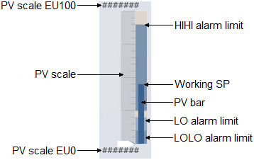

AI_FB_fp (Analog Input function block faceplate)
The AI_FB_fp is used with the Analog Input (AI) function block. The
following list describes the major components that are present on the AI_FB_fp.
- Function block information
-
- Zone name
- If the faceplate or detail display contains an object in another zone, the zone name appears here.
- Tag
- The DeltaV database tag for the module function block associated with the faceplate or detail display.
- PV
- Shows the module's PV value and the PV engineering units. The text color is based on the PV status (blue when the PV status is good and a shade of red when the status is uncertain or bad).
- PV bar graph
-
Presents PID, AI, or ALM information graphically, relative to the defined EU0 and EU100.

- PV bar
- Graphically indicates the PV value.
- PV scale EU0 and EU100
- Shows the values that correspond to 0% and 100% of scale, respectively, for the PV.
- PV scale lines
- Shows the major and minor divisions for the scale.
- PV alarm limits
- Indicates the HI HI, HI, LO, and LO LO alarm limits for the PV. Alarm limits can be modified using the module's detail display.
- Limits
- Shows the limits for module alarms, which include the following
values:
- Hi Hi Lim
- Shows the maximum value of the PV (in engineering units) before the High High Limit active bit (HI_HI_ACT) is set. Click this field to enter a new limit.
- Hi Lim
- Shows the maximum value of the PV (in engineering units) before the High Limit active bit (HI_ACT) is set. Click this field to enter a new limit.
- Lo Lim
- Shows the minimum value of the PV (in engineering units) before the Low Limit active bit (LO_ACT) is set. Click this field to enter a new limit.
- Lo Lo Lim
- Shows the minimum value of the PV (in engineering units) before the Low Limit active bit (LO_ACT) is set. Click this field to enter a new limit.
- Alm Hysteresis
- Shows the alarm hysteresis (or deadband) value for the alarm conditions in % of OUT scale. Click this field to enter a new value. An alarm condition does not recur until the PV has backed away from the corresponding limit by at least the % of OUT Scale specified by this value.
- Low Cutoff
- Activated when the Low Cutoff I/O option is enabled. When the converted measurement is below the LOW_CUT value, it is shown in the PV as 0.0.
- Conditional alarm button
- Click this button to open a popup where you can change the values of the conditional alarming parameters. This button is visible only when conditional alarming is enabled.
- Simulate
-
- Simulate enable
- Select this check box to enable the simulate value to be used as the PV input for the discrete input (DI).
- Simulate value
- Enter the value to be used as the Boolean form of the PV input when simulate is enabled.
- Field Value
- Shows the raw field value. To scale this value, use the Out scale to calculate the PV value when simulate is disabled.
- Tuning
- Linearization
- Shows the linearization type for the AI. The possible types are DIRECT, INDIRECT, IND SQR ROOT, or DIRECT INDEP.
- Trend chart
- Provides a condensed version of a trend chart.
- Faceplate button
- Opens the module faceplate display.